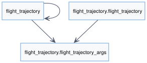
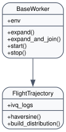
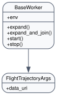
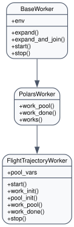

Flight Trajectory Project
Overview
Extends the base flight example with satellite and beam geometry so you can experiment with richer trajectory analytics.
Demonstrates custom distribution logic that keeps all legs of a given flight on the same worker while balancing distance travelled across the cluster.
Ships ready-to-use waypoints, satellite catalogues and beam files to exercise the Explore cartography bundles (2D maps, 3D deck.gl, network overlays).
Manager (flight_trajectory.flight_trajectory)
Validates arguments such as number of flights, waypoint file, satellite data and beam catalogues before seeding
WorkDispatcher.Normalises paths for managed machines, wipes/creates the dataframe export folder and exposes
from_toml/to_tomlhelpers so Execute snippets can persist configuration.Implements
build_distributionwhich uses haversine distances to partition flights, guaranteeing that large trajectories are spread evenly.
Args (flight_trajectory.app_args)
Pydantic model capturing the extra artefacts required for this scenario (waypoints GeoJSON, beam CSV, satellite constellation definition, number of flights to replay).
Reuses
agi_env.app_argshelpers so serialization back toapp_settings.tomlstays consistent with the Streamlit UI.
Worker (flight_trajectory_worker.flight_trajectory_worker)
Extends
PolarsWorkerto enrich telemetry with beam/satellite metadata and produce the dataframes consumed by Explore’s 3D visualisations.Uses pre/post-install scripts to unpack heavy assets and includes Cython hooks for performance-critical sections.
Publishes per-flight metadata back to the manager so the Workplan viewer can highlight idle workers or overloaded partitions.
Assets & Tests
app_test.pyvalidates the install → distribute → run lifecycle.test/_test_*modules cover the manager orchestration, worker calculations and dataset-specific helpers.src/app_settings.tomldocuments the default Explore page selection (maps, network graphs, 3D deck.gl) shipped with the project.
API Reference
{kind=link}

- class flight_trajectory.flight_trajectory.FlightTrajectory(env, args)[source]
Bases:
BaseWorkerFlightTrajectory class provides methods to orchestrate the run.
- args_dump_mode: ClassVar[str] = 'json'
- args_dumper(settings_path, *, section='args', create_missing=True)
- Return type:
None
- args_ensure_defaults(*, env=None, **_)
- Return type:
- args_helper_module: ClassVar[ModuleType | str | None] = None
- args_loader(*, section='args')
- Return type:
- args_merger(overrides=None)
- Return type:
- as_dict()[source]
Return serialisable worker arguments, allowing subclasses to extend the payload.
- Return type:
dict[str,Any]
- auto_clean_data_out: ClassVar[bool] = True
- auto_prepare_output_dir: ClassVar[bool] = True
- build_distribution(workers)[source]
build_distrib: to provide the list of files per planes (level1) and per workers (level2) the level 1 has been think to prevent that à job that requires all the output-data of a plane have to wait for another my_code_worker which would have collapse the overall performance
Args:
Returns:
- data_out_attr: ClassVar[str] = 'data_out'
- data_out_parent_levels: ClassVar[int] = 1
- data_out_source_field: ClassVar[str | None] = 'data_uri'
- data_out_subdir: ClassVar[str] = 'dataframe'
- default_settings_path: ClassVar[str] = 'app_settings.toml'
- default_settings_section: ClassVar[str] = 'args'
- env: Optional[AgiEnv] = None
- static expand(path, base_directory=None)
Expand a given path to an absolute path. :param path: The path to expand. :type path: str :param base_directory: The base directory to use for expanding the path. Defaults to None. :type base_directory: str, optional
- Returns:
The expanded absolute path.
- Return type:
str
- Raises:
None –
Note
This method handles both Unix and Windows paths and expands ‘~’ notation to the user’s home directory.
- static expand_and_join(path1, path2)
Join two paths after expanding the first path.
- Parameters:
path1 (str) – The first path to expand and join.
path2 (str) – The second path to join with the expanded first path.
- Returns:
The joined path.
- Return type:
str
- classmethod from_toml(env, settings_path='app_settings.toml', section='args', **overrides)[source]
Instantiate the worker with arguments read from a TOML settings file.
- Return type:
- haversine(lon1, lat1, lon2, lat2)[source]
Calculate the great-circle distance between two points on the Earth specified by longitude and latitude. Returns distance in kilometers.
- ivq_logs = None
- managed_pc_home_suffix: ClassVar[str] = 'MyApp'
- managed_pc_path_fields: ClassVar[tuple[str, ...]] = ('data_uri',)
- static normalize_data_uri(data_uri)
Normalize data URIs and ensure Windows shares are reachable.
- Return type:
str
- classmethod prepare_args(args, *, env=None)
- Return type:
Any
- prepare_output_dir(root, *, subdir=None, attribute=None, clean=None)
Create (and optionally reset) a deterministic output directory.
- Return type:
Path
- prepare_output_dir_from_args(*, field=None, subdir=None, attribute=None, clean=None)
- Return type:
Path
- setup_args(args, *, env=None, error=None, prepare_output=None)
- Return type:
Any
- static start(worker_inst)
Invoke the concrete worker’s
starthook once initialised.
- stop()
Returns:
- to_toml(settings_path='app_settings.toml', section='args', create_missing=True)[source]
Persist current arguments to a TOML settings file.
- Return type:
None
- verbose = 1
{kind=link}

Argument management for Flight Trajectory project.
- flight_trajectory.app_args.ArgsModel
alias of
FlightTrajectoryArgs
- flight_trajectory.app_args.ArgsOverrides
alias of
FlightTrajectoryArgsTD
- class flight_trajectory.app_args.FlightTrajectoryArgs(**data)[source]
Bases:
BaseModel- __init__(**data)
Create a new model by parsing and validating input data from keyword arguments.
Raises [ValidationError][pydantic_core.ValidationError] if the input data cannot be validated to form a valid model.
self is explicitly positional-only to allow self as a field name.
- altitude_loss_speed_treshold: float
- beam_file: str
- classmethod construct(_fields_set=None, **values)
- Return type:
Self
- copy(*, include=None, exclude=None, update=None, deep=False)
Returns a copy of the model.
- !!! warning “Deprecated”
This method is now deprecated; use model_copy instead.
If you need include or exclude, use:
`python {test="skip" lint="skip"} data = self.model_dump(include=include, exclude=exclude, round_trip=True) data = {**data, **(update or {})} copied = self.model_validate(data) `- Parameters:
include – Optional set or mapping specifying which fields to include in the copied model.
exclude – Optional set or mapping specifying which fields to exclude in the copied model.
update – Optional dictionary of field-value pairs to override field values in the copied model.
deep – If True, the values of fields that are Pydantic models will be deep-copied.
- Returns:
A copy of the model with included, excluded and updated fields as specified.
- cruising_pitch_max: float
- data_uri: Path
- default_alt_value: float
- descent_alt_treshold_landing: int
- descent_pitch_target: float
- dict(*, include=None, exclude=None, by_alias=False, exclude_unset=False, exclude_defaults=False, exclude_none=False)
- Return type:
Dict[str,Any]
- enable_climb: bool
- enable_descent: bool
- classmethod from_orm(obj)
- Return type:
Self
- json(*, include=None, exclude=None, by_alias=False, exclude_unset=False, exclude_defaults=False, exclude_none=False, encoder=PydanticUndefined, models_as_dict=PydanticUndefined, **dumps_kwargs)
- Return type:
str
- landing_pitch_target: float
- landing_speed_target: float
- max_pitch: float
- max_roll: float
- max_speed: float
- max_speed_ratio_while_turining: float
- model_computed_fields = {}
- model_config: ClassVar[ConfigDict] = {'extra': 'ignore'}
Configuration for the model, should be a dictionary conforming to [ConfigDict][pydantic.config.ConfigDict].
- classmethod model_construct(_fields_set=None, **values)
Creates a new instance of the Model class with validated data.
Creates a new model setting __dict__ and __pydantic_fields_set__ from trusted or pre-validated data. Default values are respected, but no other validation is performed.
- Return type:
Self
- !!! note
model_construct() generally respects the model_config.extra setting on the provided model. That is, if model_config.extra == ‘allow’, then all extra passed values are added to the model instance’s __dict__ and __pydantic_extra__ fields. If model_config.extra == ‘ignore’ (the default), then all extra passed values are ignored. Because no validation is performed with a call to model_construct(), having model_config.extra == ‘forbid’ does not result in an error if extra values are passed, but they will be ignored.
- Parameters:
_fields_set – A set of field names that were originally explicitly set during instantiation. If provided, this is directly used for the [model_fields_set][pydantic.BaseModel.model_fields_set] attribute. Otherwise, the field names from the values argument will be used.
values – Trusted or pre-validated data dictionary.
- Returns:
A new instance of the Model class with validated data.
- model_copy(*, update=None, deep=False)
- Return type:
Self
- !!! abstract “Usage Documentation”
[model_copy](../concepts/serialization.md#model_copy)
Returns a copy of the model.
- !!! note
The underlying instance’s [__dict__][object.__dict__] attribute is copied. This might have unexpected side effects if you store anything in it, on top of the model fields (e.g. the value of [cached properties][functools.cached_property]).
- Parameters:
update – Values to change/add in the new model. Note: the data is not validated before creating the new model. You should trust this data.
deep – Set to True to make a deep copy of the model.
- Returns:
New model instance.
- model_dump(*, mode='python', include=None, exclude=None, context=None, by_alias=None, exclude_unset=False, exclude_defaults=False, exclude_none=False, round_trip=False, warnings=True, fallback=None, serialize_as_any=False)
- Return type:
dict[str,Any]
- !!! abstract “Usage Documentation”
[model_dump](../concepts/serialization.md#modelmodel_dump)
Generate a dictionary representation of the model, optionally specifying which fields to include or exclude.
- Parameters:
mode – The mode in which to_python should run. If mode is ‘json’, the output will only contain JSON serializable types. If mode is ‘python’, the output may contain non-JSON-serializable Python objects.
include – A set of fields to include in the output.
exclude – A set of fields to exclude from the output.
context – Additional context to pass to the serializer.
by_alias – Whether to use the field’s alias in the dictionary key if defined.
exclude_unset – Whether to exclude fields that have not been explicitly set.
exclude_defaults – Whether to exclude fields that are set to their default value.
exclude_none – Whether to exclude fields that have a value of None.
round_trip – If True, dumped values should be valid as input for non-idempotent types such as Json[T].
warnings – How to handle serialization errors. False/”none” ignores them, True/”warn” logs errors, “error” raises a [PydanticSerializationError][pydantic_core.PydanticSerializationError].
fallback – A function to call when an unknown value is encountered. If not provided, a [PydanticSerializationError][pydantic_core.PydanticSerializationError] error is raised.
serialize_as_any – Whether to serialize fields with duck-typing serialization behavior.
- Returns:
A dictionary representation of the model.
- model_dump_json(*, indent=None, include=None, exclude=None, context=None, by_alias=None, exclude_unset=False, exclude_defaults=False, exclude_none=False, round_trip=False, warnings=True, fallback=None, serialize_as_any=False)
- Return type:
str
- !!! abstract “Usage Documentation”
[model_dump_json](../concepts/serialization.md#modelmodel_dump_json)
Generates a JSON representation of the model using Pydantic’s to_json method.
- Parameters:
indent – Indentation to use in the JSON output. If None is passed, the output will be compact.
include – Field(s) to include in the JSON output.
exclude – Field(s) to exclude from the JSON output.
context – Additional context to pass to the serializer.
by_alias – Whether to serialize using field aliases.
exclude_unset – Whether to exclude fields that have not been explicitly set.
exclude_defaults – Whether to exclude fields that are set to their default value.
exclude_none – Whether to exclude fields that have a value of None.
round_trip – If True, dumped values should be valid as input for non-idempotent types such as Json[T].
warnings – How to handle serialization errors. False/”none” ignores them, True/”warn” logs errors, “error” raises a [PydanticSerializationError][pydantic_core.PydanticSerializationError].
fallback – A function to call when an unknown value is encountered. If not provided, a [PydanticSerializationError][pydantic_core.PydanticSerializationError] error is raised.
serialize_as_any – Whether to serialize fields with duck-typing serialization behavior.
- Returns:
A JSON string representation of the model.
- property model_extra: dict[str, Any] | None
Get extra fields set during validation.
- Returns:
A dictionary of extra fields, or None if config.extra is not set to “allow”.
- model_fields = {'altitude_loss_speed_treshold': FieldInfo(annotation=float, required=False, default=400.0), 'beam_file': FieldInfo(annotation=str, required=False, default='beams.csv'), 'cruising_pitch_max': FieldInfo(annotation=float, required=False, default=3.0), 'data_uri': FieldInfo(annotation=Path, required=False, default_factory=<lambda>), 'default_alt_value': FieldInfo(annotation=float, required=False, default=4000.0), 'descent_alt_treshold_landing': FieldInfo(annotation=int, required=False, default=500), 'descent_pitch_target': FieldInfo(annotation=float, required=False, default=-3.0), 'enable_climb': FieldInfo(annotation=bool, required=False, default=False), 'enable_descent': FieldInfo(annotation=bool, required=False, default=False), 'landing_pitch_target': FieldInfo(annotation=float, required=False, default=3.0), 'landing_speed_target': FieldInfo(annotation=float, required=False, default=200.0), 'max_pitch': FieldInfo(annotation=float, required=False, default=12.0), 'max_roll': FieldInfo(annotation=float, required=False, default=30.0), 'max_speed': FieldInfo(annotation=float, required=False, default=900.0), 'max_speed_ratio_while_turining': FieldInfo(annotation=float, required=False, default=0.8), 'num_flights': FieldInfo(annotation=int, required=False, default=1, metadata=[Ge(ge=1)]), 'pitch_angular_speed': FieldInfo(annotation=float, required=False, default=2.0), 'pitch_enable_speed_ratio': FieldInfo(annotation=float, required=False, default=0.3), 'plane_type': FieldInfo(annotation=str, required=False, default='avions'), 'roll_angular_speed': FieldInfo(annotation=float, required=False, default=3.0), 'sat_file': FieldInfo(annotation=str, required=False, default='satellites.csv'), 'target_climbup_pitch': FieldInfo(annotation=float, required=False, default=8.0), 'vehicule_acceleration': FieldInfo(annotation=float, required=False, default=5.0), 'waypoints': FieldInfo(annotation=str, required=False, default='waypoints.geojson'), 'yaw_angular_speed': FieldInfo(annotation=float, required=False, default=1.0)}
- property model_fields_set: set[str]
Returns the set of fields that have been explicitly set on this model instance.
- Returns:
- A set of strings representing the fields that have been set,
i.e. that were not filled from defaults.
- classmethod model_json_schema(by_alias=True, ref_template='#/$defs/{model}', schema_generator=<class 'pydantic.json_schema.GenerateJsonSchema'>, mode='validation')
Generates a JSON schema for a model class.
- Return type:
dict[str,Any]- Parameters:
by_alias – Whether to use attribute aliases or not.
ref_template – The reference template.
schema_generator – To override the logic used to generate the JSON schema, as a subclass of GenerateJsonSchema with your desired modifications
mode – The mode in which to generate the schema.
- Returns:
The JSON schema for the given model class.
- classmethod model_parametrized_name(params)
Compute the class name for parametrizations of generic classes.
This method can be overridden to achieve a custom naming scheme for generic BaseModels.
- Return type:
str- Parameters:
params – Tuple of types of the class. Given a generic class Model with 2 type variables and a concrete model Model[str, int], the value (str, int) would be passed to params.
- Returns:
String representing the new class where params are passed to cls as type variables.
- Raises:
TypeError – Raised when trying to generate concrete names for non-generic models.
- model_post_init(context, /)
Override this method to perform additional initialization after __init__ and model_construct. This is useful if you want to do some validation that requires the entire model to be initialized.
- Return type:
None
- classmethod model_rebuild(*, force=False, raise_errors=True, _parent_namespace_depth=2, _types_namespace=None)
Try to rebuild the pydantic-core schema for the model.
This may be necessary when one of the annotations is a ForwardRef which could not be resolved during the initial attempt to build the schema, and automatic rebuilding fails.
- Return type:
bool|None- Parameters:
force – Whether to force the rebuilding of the model schema, defaults to False.
raise_errors – Whether to raise errors, defaults to True.
_parent_namespace_depth – The depth level of the parent namespace, defaults to 2.
_types_namespace – The types namespace, defaults to None.
- Returns:
Returns None if the schema is already “complete” and rebuilding was not required. If rebuilding _was_ required, returns True if rebuilding was successful, otherwise False.
- classmethod model_validate(obj, *, strict=None, from_attributes=None, context=None, by_alias=None, by_name=None)
Validate a pydantic model instance.
- Return type:
Self- Parameters:
obj – The object to validate.
strict – Whether to enforce types strictly.
from_attributes – Whether to extract data from object attributes.
context – Additional context to pass to the validator.
by_alias – Whether to use the field’s alias when validating against the provided input data.
by_name – Whether to use the field’s name when validating against the provided input data.
- Raises:
ValidationError – If the object could not be validated.
- Returns:
The validated model instance.
- classmethod model_validate_json(json_data, *, strict=None, context=None, by_alias=None, by_name=None)
- Return type:
Self
- !!! abstract “Usage Documentation”
[JSON Parsing](../concepts/json.md#json-parsing)
Validate the given JSON data against the Pydantic model.
- Parameters:
json_data – The JSON data to validate.
strict – Whether to enforce types strictly.
context – Extra variables to pass to the validator.
by_alias – Whether to use the field’s alias when validating against the provided input data.
by_name – Whether to use the field’s name when validating against the provided input data.
- Returns:
The validated Pydantic model.
- Raises:
ValidationError – If json_data is not a JSON string or the object could not be validated.
- classmethod model_validate_strings(obj, *, strict=None, context=None, by_alias=None, by_name=None)
Validate the given object with string data against the Pydantic model.
- Return type:
Self- Parameters:
obj – The object containing string data to validate.
strict – Whether to enforce types strictly.
context – Extra variables to pass to the validator.
by_alias – Whether to use the field’s alias when validating against the provided input data.
by_name – Whether to use the field’s name when validating against the provided input data.
- Returns:
The validated Pydantic model.
- num_flights: int
- classmethod parse_file(path, *, content_type=None, encoding='utf8', proto=None, allow_pickle=False)
- Return type:
Self
- classmethod parse_obj(obj)
- Return type:
Self
- classmethod parse_raw(b, *, content_type=None, encoding='utf8', proto=None, allow_pickle=False)
- Return type:
Self
- pitch_angular_speed: float
- pitch_enable_speed_ratio: float
- plane_type: str
- roll_angular_speed: float
- sat_file: str
- classmethod schema(by_alias=True, ref_template='#/$defs/{model}')
- Return type:
Dict[str,Any]
- classmethod schema_json(*, by_alias=True, ref_template='#/$defs/{model}', **dumps_kwargs)
- Return type:
str
- target_climbup_pitch: float
- classmethod update_forward_refs(**localns)
- Return type:
None
- classmethod validate(value)
- Return type:
Self
- vehicule_acceleration: float
- waypoints: str
- yaw_angular_speed: float
- class flight_trajectory.app_args.FlightTrajectoryArgsTD[source]
Bases:
TypedDict- __init__(*args, **kwargs)
-
altitude_loss_speed_treshold:
float
-
beam_file:
str
- clear()
Remove all items from the dict.
- copy()
Return a shallow copy of the dict.
-
cruising_pitch_max:
float
-
data_uri:
str
-
default_alt_value:
float
-
descent_alt_treshold_landing:
int
-
descent_pitch_target:
float
-
enable_climb:
bool
-
enable_descent:
bool
- classmethod fromkeys(iterable, value=None, /)
Create a new dictionary with keys from iterable and values set to value.
- get(key, default=None, /)
Return the value for key if key is in the dictionary, else default.
- items()
Return a set-like object providing a view on the dict’s items.
- keys()
Return a set-like object providing a view on the dict’s keys.
-
landing_pitch_target:
float
-
landing_speed_target:
float
-
max_pitch:
float
-
max_roll:
float
-
max_speed:
float
-
max_speed_ratio_while_turining:
float
-
num_flights:
int
-
pitch_angular_speed:
float
-
pitch_enable_speed_ratio:
float
-
plane_type:
str
- pop(k[, d]) v, remove specified key and return the corresponding value.
If the key is not found, return the default if given; otherwise, raise a KeyError.
- popitem()
Remove and return a (key, value) pair as a 2-tuple.
Pairs are returned in LIFO (last-in, first-out) order. Raises KeyError if the dict is empty.
-
roll_angular_speed:
float
-
sat_file:
str
- setdefault(key, default=None, /)
Insert key with a value of default if key is not in the dictionary.
Return the value for key if key is in the dictionary, else default.
-
target_climbup_pitch:
float
- update([E, ]**F) None. Update D from mapping/iterable E and F.
If E is present and has a .keys() method, then does: for k in E.keys(): D[k] = E[k] If E is present and lacks a .keys() method, then does: for k, v in E: D[k] = v In either case, this is followed by: for k in F: D[k] = F[k]
- values()
Return an object providing a view on the dict’s values.
-
vehicule_acceleration:
float
-
waypoints:
str
-
yaw_angular_speed:
float
- flight_trajectory.app_args.dump_args(args, settings_path, *, section='args', create_missing=True)[source]
- Return type:
None
{kind=link}


{kind=link}
